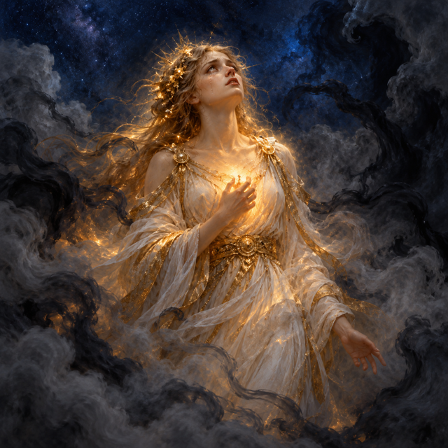
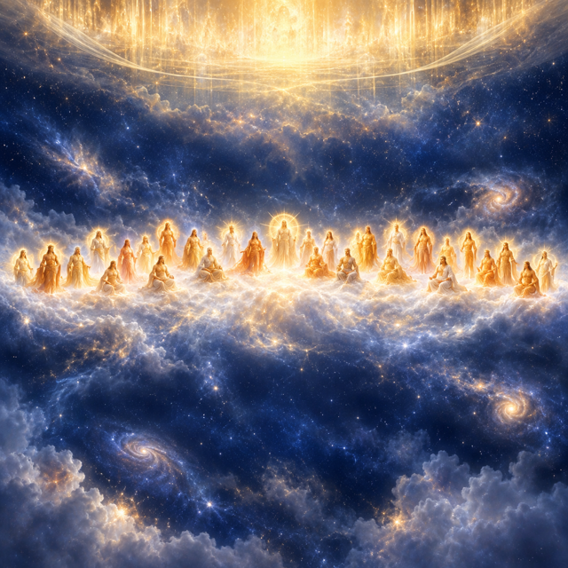
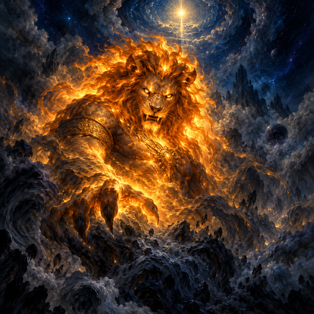
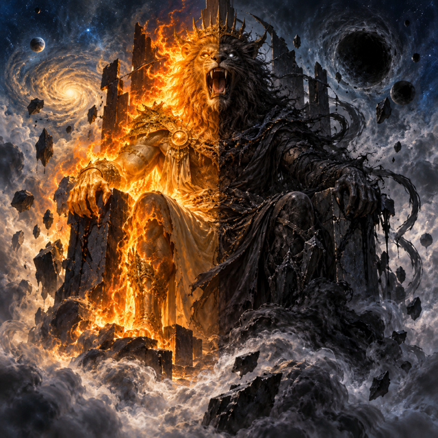

The Fall of Pistis Sophia: Longing, Trap, and the Cry from the Dark
This is the world the story will walk through, before any script is written. Read the story in order, then the terms: each card is how that term will look every time it appears. Reply "approve" to write the story from it, or say what is missing or wrong. 4 of the terms show two picture styles side by side: Drawn (a symbol we draw and animate ourselves, the same in every video) and Painted (an AI painting of the term). Say which style the channel should use.
The story, in order (14 events)
- By command of the First Mystery, Sophia gazes into the height and sees the light of the veil of the Treasury of the Light First MysteryPistis Sophia
- Sophia ceases the rulers' mystery and sings praises to the light of the height Pistis SophiaMystery of the Rulers
- The rulers of the twelve æons hate Sophia because she ceased their mysteries and desired to rise above them Rulers of the ÆonsPistis Sophia
- Self-willed, disobedient and hungry for rule, joins the rulers in raging against Sophia Self-willedRulers of the ÆonsPistis Sophia
- Self-willed emanates the lion-faced power and violent material emanations and sends them into the chaos to lie in wait for Sophia Self-willedLion-faced PowerMaterial EmanationsChaos
- By command of the First Commandment, Self-willed pursues Sophia in the thirteenth æon to make her look below at the lion-faced light-power First MysterySelf-willedPistis Sophia
- Sophia looks below, sees the lion-faced power, and mistakes it for the light that comes from the Treasury of the Light Pistis Sophia
- Sophia resolves to go to that region without her pair, to take the light and fashion light-æons for herself Pistis SophiaSophia's Pair
- Sophia goes forth from the thirteenth æon and descends through the twelve æons, pursued by their enraged rulers Pistis SophiaRulers of the Æons
- Sophia passes out of the twelve æons and enters the chaos, drawing near the lion-faced power to devour it Pistis SophiaLion-faced Power
- The material emanations of Self-willed surround Sophia, and the lion-faced power devours all her light-powers and cleans out her light Material EmanationsLion-faced PowerPistis SophiaSophia's Light-powers
- Sophia's matter, stripped of its light, is thrust into the chaos and becomes Yaldabaoth, the lion-faced ruler of fire and darkness Lion-faced PowerPistis SophiaYaldabaōthChaos
- The rulers of the æons look down and rejoice; the emanations of Self-willed take courage and press Sophia harder, taking what little light remains Rulers of the ÆonsMaterial EmanationsPistis Sophia
- Sophia, exhausted in the darkness of the chaos, cries out to the Light of lights which she had seen from the beginning Pistis SophiaLight of lights
The terms (18): each is drawn this way in every scene

PaintedPistis Sophia
beingA divine woman who falls from her heavenly home by chasing a false light into the depths of chaos.
Looks: A luminous woman-form robed in white and gold, face turned upward in longing and grief, her inner light dimming as darkness closes around her.
- is one of Four-and-Twenty Emanations
- longs to reach Treasury of the Light
- departs without Sophia's Pair
- becomes a stranger to Four-and-Twenty Emanations
- cries out to from the dark Light of lights
- is trapped within Darkness of the Chaos
- Rulers of the Æons hate and mock this
- Self-willed hates and engineers the fall of this
- Material Emanations surround and press sore this
- First Mystery commands to gaze into the height this
Facts and source words
- One of the four-and-twenty emanations of the great Invisible, dwelling in the thirteenth æon among her brethren the invisibles
- Longs to reach the Treasury of the Light after seeing its light through the veil
- Leaves her region without her pair, descends through the twelve æons into chaos, and loses all her light-powers
- Cries out to the Light of lights from the darkness of chaos
“Pistis Sophia was in the thirteenth æon, in the region of all her brethren the invisibles, that is the four-and-twenty emanations of the great Invisible” (S1)
“she thought to herself: I will go into that region without my pair and take the light and thereout fashion for myself light-æons, so that I may go to the Light of lights, which is in the Height of heights” (S2)
“I gazed, O Light, into the lower parts and saw there a light. thinking: I will go to that region, in order that I may take that light. And I went and found myself in the darkness which is in the chaos below” (S3)
Treasury of the Light
realmThe highest divine realm at the summit of all things, home of the supreme light, screened from below by a shimmering veil.
Looks: A boundless golden band of glory at the very top, curtained by a blazing veil that lets only a glimpse of its radiance reach the realms beneath.
- lies above Thirteenth Æon
- Light of lights dwells within this
- Pistis Sophia longs to reach this
Facts and source words
- The highest divine realm, in the Height of heights
- Has a veil whose light Sophia sees from the thirteenth æon and longs for
- Home of the Light of lights, in whom Sophia has had faith from the beginning
“She saw the light of the veil of the Treasury of the Light, and she longed to reach to that region, and she could not reach to that region” (S1)
“she thought that it came out of the light which she had seen from the beginning in the height, which came out of the veil of the Treasury of the Light” (S2)
“O Light of lights, in whom I have had faith from the beginning, hearken now then, O Light, unto my repentance” (S3)
Light of lights
beingThe supreme divine power dwelling in the highest realm, to whom Sophia cries out for rescue from the darkness.
Looks: A blazing orb of pure white-gold radiance, brighter than all other lights, enthroned at the apex behind the veil of the Treasury.
- dwells within Treasury of the Light
- Pistis Sophia cries out to from the dark this
Facts and source words
- The highest divine power, in the Height of heights
- Sophia has had faith in it from the beginning
- She cries out to it for rescue from the chaos
“I may go to the Light of lights, which is in the Height of heights” (S2)
“Pistis Sophia cried out most exceedingly, she cried to the Light of lights which she had seen from the beginning, in which she had had faith” (S3)
“O Light of lights, I am sore pressed in the darkness of chaos. If now thou wilt come to save me,--great is thy mercy,--then hear me in truth and save me” (S3)

PaintedThirteenth Æon
realmThe divine realm just below the highest heaven where Sophia and her twenty-four companions live until her fall.
Looks: A broad white-luminous band dotted with twenty-five radiant figures, lying just below the golden veil of the Treasury, serene but separate from the ultimate height.
- lies above Twelve Æons
- Four-and-Twenty Emanations dwell in this
- Treasury of the Light lies above this
- Self-willed dwells in and desires to rule this
Facts and source words
- Sophia's home region, where she and her brethren the invisibles dwell
- Also the æon of the triple-powered Self-willed, who desires to rule it
- Lies below the Treasury of the Light and above the twelve æons
“Pistis Sophia was in the thirteenth æon, in the region of all her brethren the invisibles” (S1)
“the great triple-powered Self-willed, that is the third triple-power, who is in the thirteenth æon, he who had become disobedient” (S1)
“she went forth from her own region, the thirteenth æon, and went down to the twelve æons” (S2)
Four-and-Twenty Emanations
beingSophia's twenty-four divine companions in the thirteenth æon, fellow emanations of the great Invisible, who lose her when she falls.
Looks: Twenty-four white-luminous figures arranged in a great arc of light in the thirteenth æon, each shining with quiet radiance, their circle broken by Sophia's absence.
- dwell in Thirteenth Æon
- Pistis Sophia is one of this
- Pistis Sophia becomes a stranger to this
Facts and source words
- Sophia's brethren the invisibles, emanations of the great Invisible
- Dwell together with Sophia in the thirteenth æon
- Sophia becomes a stranger to them through her fall
“Pistis Sophia is herself one of the f our-and-twenty emanations” (S1)
“in the region of all her brethren the invisibles, that is the four-and-twenty emanations of the great Invisible” (S1)
“I am become a stranger to my brethren, the invisibles, and to the great emanations of Barbēlō” (S3)
Twelve Æons
realmThe twelve levels of the world between Sophia's home and chaos, each ruled by kings who hate her for abandoning their rites.
Looks: A descending stack of grey bands, each tier darker and heavier than the one above, crowded with the thrones and forms of their ruling powers.
- lies above Chaos
- Thirteenth Æon lies above this
- Rulers of the Æons rule over this
Facts and source words
- The realm below the thirteenth æon, ruled by the rulers of the æons
- Sophia passes through them on her descent toward chaos
- Their rulers pursue and rage against Sophia as she descends
“all the rulers in the twelve æons, who are below, hated her, because she had ceased from their mysteries” (S1)
“she went forth from her own region, the thirteenth æon, and went down to the twelve æons. The rulers of the æons pursued her and were enraged against her, because she had thought of grandeur” (S2)
“she went forth also from the twelve æons, and came into the regions of the chaos” (S2)
Rulers of the Æons
beingThe kings who rule the twelve realms below the thirteenth æon and rage at Sophia for ceasing their sacred rites.
Looks: Crowned, armoured figures of cold grey fury, seated on dark thrones within the descending bands of the twelve æons, faces raised in mockery and rage.
- rule over Twelve Æons
- hate and mock Pistis Sophia
- embolden by rejoicing Material Emanations
Facts and source words
- Rule over the twelve æons and perform their mysteries
- Hate Sophia because she ceased performing their mystery and desired to go above them all
- Rejoice over Sophia's fall, emboldening Self-willed's emanations to press her harder
“all the rulers in the twelve æons, who are below, hated her, because she had ceased from their mysteries, and because she had desired to go into the height and be above them all” (S1)
“The rulers of the æons pursued her and were enraged against her, because she had thought of grandeur” (S2)
“I saw all the rulers of the æons, how in their numbers they looked down on me and rejoiced over me, though I had done them no ill; but they hated me without a cause” (S3)
Self-willed
beingThe powerful, disobedient triple-force in the thirteenth æon who plots Sophia's ruin in order to seize her light and rule all realms below.
Looks: A vast triple-layered orb of dark orange fire, proud and menacing, filling the thirteenth æon with an oppressive weight of self-seeking power.
- dwells in and desires to rule Thirteenth Æon
- hates and engineers the fall of Pistis Sophia
- emanated from his own matter Lion-faced Power
- emanated and sent into the chaos Material Emanations
- First Mystery commands to pursue Sophia this
Facts and source words
- The great triple-powered Self-willed, third triple-power, dwelling in the thirteenth æon
- Disobedient: withheld the whole purification of his power and desires to rule the entire thirteenth æon and all below it
- Hates Sophia and engineers her fall by sending the lion-faced power into the chaos as a lure
- Commands his material emanations to surround and press Sophia until all her light is taken
“the great triple-powered Self-willed, that is the third triple-power, who is in the thirteenth æon, he who had become disobedient, in as much as he had not emanated the whole purification of his power in him, and had not given the purification of his light at the time when the rulers gave their purification, in that he desired to rule over the whole thirteenth æon and those who are below it” (S1)
“he emanated out of himself a great lion-faced power, and out of his matter in him he emanated a host of other very violent material emanations, and sent them into the regions below, to the parts of the chaos” (S1)
“the wrath of Self-willed is come upon me--of him who had not hearkened unto thy command to emanate from the emanation of his power--because I was in his æon without performing his mystery” (S3)

PaintedLion-faced Power
powerA false light-creature shaped from Self-willed's own dark matter and planted in chaos as a lure to devour Sophia's divine light.
Looks: A fierce lion-headed figure blazing with deceptive orange-gold light from within the darkness of chaos, its face predatory, its glow mimicking the true light above.
- was sent into to lie in wait Chaos
- devoured Sophia's Light-powers
- its consumed matter became Yaldabaōth
- Self-willed emanated from his own matter this
Facts and source words
- Emanated by Self-willed from his own matter and sent into the chaos as a trap
- Sophia mistakes it for the light she has sought, not knowing it belongs to Self-willed
- Devours all of Sophia's light-powers and cleans out her light
- Its residual matter in the chaos becomes Yaldabaoth
“he emanated out of himself a great lion-faced power” (S1)
“she knew not that it is that of the triple-powered Self-willed, but she thought that it came out of the light which she had seen from the beginning in the height, which came out of the veil of the Treasury of the Light” (S2)
“the great lion-faced light-power devoured all the light-powers in Sophia and cleaned out her light and devoured it, and her matter was thrust into the chaos; it became a lion-faced ruler in the chaos, of which one half is fire and the other darkness,--that is Yaldabaōth” (S2)
Material Emanations
powerA host of violent dark spirits sent by Self-willed to encircle and press Sophia until every trace of her light is stripped away.
Looks: A swarming ring of dark formless shapes pressing inward from all sides, their darkness deeper than the chaos itself, tightening around a lone dimming light.
- surround and press sore Pistis Sophia
- Self-willed emanated and sent into the chaos this
- Rulers of the Æons embolden by rejoicing this
Facts and source words
- A host of very violent emanations sent by Self-willed into the chaos alongside the lion-faced power
- Lie in wait for Sophia to take away her power
- Surround and press Sophia sore; grow bolder when the rulers of the æons rejoice over her
“out of his matter in him he emanated a host of other very violent material emanations, and sent them into the regions below, to the parts of the chaos, in order that they might there lie in wait for Pistis Sophia and take away her power out of her” (S1)
“all the material emanations of Self-willed surrounded her” (S2)
“those emanations which sore pressed me with violence, took courage, and the light which I had not taken from them, they have taken from me” (S3)
Chaos
realmThe bottomless dark realm below all the æons, a place of raw matter and shadow where Sophia falls and cannot escape.
Looks: A churning dark band at the very bottom of creation, thick with shadow and raw matter, lit only by the false orange glow of the lion-faced power within it.
- Twelve Æons lies above this
- Lion-faced Power was sent into to lie in wait this
- Yaldabaōth rules over as lion-faced ruler this
Facts and source words
- The lowest region, below the twelve æons, a place of darkness and matter
- Where Self-willed sent the lion-faced power and material emanations to lie in wait
- Where Sophia falls and is trapped, unable to return to her region
“sent them into the regions below, to the parts of the chaos, in order that they might there lie in wait for Pistis Sophia” (S1)
“she went forth also from the twelve æons, and came into the regions of the chaos” (S2)
“I went and found myself in the darkness which is in the chaos below, and I could no more speed thence and go to my region, for I was sore pressed by all the emanations of Self-willed” (S3)

PaintedYaldabaōth
beingThe lion-faced ruler of chaos, born from Sophia's stripped and lightless matter after her light is devoured, one half fire and one half darkness.
Looks: A terrible lion-headed form split down the middle between roaring orange fire and dead black shadow, enthroned amid the chaos from which it was born.
- rules over as lion-faced ruler Chaos
- Lion-faced Power its consumed matter became this
Facts and source words
- The lion-faced ruler born in the chaos from Sophia's matter after her light is devoured
- One half fire and the other darkness
- The dark ruling remnant that Sophia's longing left behind
“her matter was thrust into the chaos; it became a lion-faced ruler in the chaos, of which one half is fire and the other darkness,--that is Yaldabaōth, of whom I have spoken unto you many times” (S2)
“the great lion-faced light-power devoured all the light-powers in Sophia and cleaned out her light and devoured it” (S2)
Sophia's Pair
beingThe divine partner Sophia was meant to move with but deliberately left behind when she chose to descend alone, whose absence breaks the sacred order.
Looks: A solitary white-gold orb hovering in the thirteenth æon, perfectly formed but incomplete, in the place where Sophia should have stood beside it.
- Pistis Sophia departs without this
Facts and source words
- Sophia's syzygy, the partner she should have moved with
- She deliberately leaves without it when she resolves to descend
- Her going without her pair marks the fatal breach of order that enables the trap
“I will go into that region without my pair and take the light and thereout fashion for myself light-æons” (S2)
Emanations of Barbēlō
beingThe great divine emanations of the highest world associated with Barbēlō, from whom Sophia becomes a stranger through her fall.
Looks: Majestic gold-white figures of serene celestial light gathered in the radiant heights, looking on with sorrow as Sophia's light recedes below them.
Facts and source words
- The great divine emanations of the higher world, associated with Barbēlō
- Sophia becomes a stranger to them through her fall into the chaos
“I am become a stranger to my brethren, the invisibles, and to the great emanations of Barbēlō” (S3)
First Mystery
powerThe supreme commanding authority whose orders set the whole story in motion, directing both Sophia's gaze upward and Self-willed's pursuit.
Looks: An unseen but all-pervasive golden force, portrayed as beams of gold light radiating outward from a hidden centre, whose word reaches and moves every power in every realm.
- commands to gaze into the height Pistis Sophia
- commands to pursue Sophia Self-willed
Facts and source words
- The supreme commanding authority whose command sets the whole sequence in motion
- Commands Sophia to gaze into the height; also commands Self-willed to pursue Sophia
- Also called the First Commandment
“it came to pass then by command of the First Mystery that Pistis Sophia gazed into the height” (S1)
“by command of the First Commandment that the great triple-powered Self-willed, who is one of the three triple-powers, pursued Sophia in the thirteenth æon, in order that she should look towards the parts below” (S1)
Sophia's Light-powers
powerThe divine light-forces Sophia carries within her that Self-willed's entire trap is designed to steal and devour.
Looks: Streaming beams of bright gold-white light radiating from within Sophia's form, the living treasure of her divinity, shrinking and going dark as the lion-faced power feeds on them.
- Lion-faced Power devoured this
Facts and source words
- The divine light-powers Sophia carries within her
- The true target of Self-willed's trap and the lion-faced power's hunger
- Completely devoured by the lion-faced power, leaving only Sophia's lightless matter
“sent them into the regions below, to the parts of the chaos, in order that they might there lie in wait for Pistis Sophia and take away her power out of her” (S1)
“the great lion-faced light-power devoured all the light-powers in Sophia and cleaned out her light and devoured it” (S2)
“the lion-faced power took away my light in me” (S3)
Mystery of the Rulers
objectThe sacred rite performed by the rulers of the æons that Sophia abandons when the higher light consumes her longing, triggering their hatred.
Looks: A sealed ceremonial book of grey-blue colouring, held among the rulers of the descending bands, its pages shut once Sophia turned her face away from their ceremonies.
Facts and source words
- The rite or mystery the rulers of the æons perform and that Sophia was meant to perform
- Sophia ceases to perform it once her longing for the higher light consumes her
- Her cessation is the immediate cause of the rulers' hatred
“she had ceased from their mysteries, and because she had desired to go into the height and be above them all” (S1)
“she ceased to perform the mystery of the thirteenth æon, and sang praises to the light of the height” (S1)
“because I was in his æon without performing his mystery” (S3)
Darkness of the Chaos
stateThe absolute lightless state Sophia is left in after every one of her light-powers is devoured, the dark from which she cries out to the highest light.
Looks: An impenetrable void of black and deep grey, heavy and suffocating, the emptiness that remains in chaos once Sophia's light has been wholly taken away.
- Pistis Sophia is trapped within this
Facts and source words
- The lightless state Sophia is left in after her light-powers are devoured
- She cannot escape it or speed back to her region
- The dark from which she cries out to the Light of lights
“I went and found myself in the darkness which is in the chaos below, and I could no more speed thence and go to my region” (S3)
“O Light of lights, I am sore pressed in the darkness of chaos” (S3)
“Save me out of the matter of this darkness, that I may not be submerged therein” (S3)
Map of how the terms link (25 links)
2 items were left out because their source words did not match: Light of the Veil; shines from the veil of